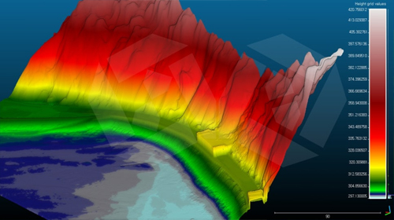

D2N Articles
D2N의 소식, 기술 트렌드, 프로젝트 인사이트를 만나보세요.
[GIS 데이터 구축·분석] 공간 데이터를 활용한 도면 작성과 현황 분석
다양한 공간 데이터를 기반으로 지도 작성과 현황 분석을 수행해 신뢰성 있는 분석과 의사결정을 지원
Read More[드론라이다와 사진측량] 실제 적용 사례 비교와 라이다 데이터 장단점
드론 라이다와 사진측량의 실제 적용 사례를 비교해 차이점을 분석하고, 라이다 데이터의 장점과 한계를 소개
Read More[라이다와 사진측량] 사진 관측 및 라이다 관측정보의 기술 비교
드론 라이다와 사진측량의 데이터 형식·수집 방식 차이를 분석하고, 적용 목적에 따른 활용 분야를 탐색
Read More[DB구축·분석] GIS 기반 공간정보 현황 조사 및 구역계 분석
GIS를 활용해 공간정보를 수집·분석하여 기초현황조사와 구역계 현황분석을 수행하고, 의사결정과 관리에 활용
Read More[고분·왕릉] 드론 라이다 기반 고분군 관측 및 데이터 분석
드론 라이다로 고분군의 지형 데이터를 정밀 수집·처리하여 문화재 연구와 보존을 위한 현황 분석에 활용
Read More[GIS DB] 드론 라이다 활용 지리·공간정보 기초자료 구축
드론 라이다 센서를 통해 수집한 포인트 클라우드 데이터를 기반으로 지리·공간정보 DB를 구축하고 다양한 객체 모델링에 활용
Read More


[체적·재적] 드론 라이다 활용 산림 및 수목 관측
라이다 기반 산림 고해상도 3D 지형과 수목의 높이·재적 정보를 수집하여 산림 관리, 자원 관리, 재해 예방에 활용
Read More
드론 라이다 관측을 통한 포인트클라우드 취득 및 데이터 처리
라이다로 지역을 정밀 스캔해 포인트클라우드를 수집·처리하고, 재해예방·토지조사·설계 등 다양한 분야에 활용
Read More[Geosun LiDAR System] 스마트 비즈니스를 위한 라이다 솔루션
비즈니스 생산성을 높이는 보다 저렴하고 높은 성능의 Geosun(거선) 라이다 솔루션
Read More